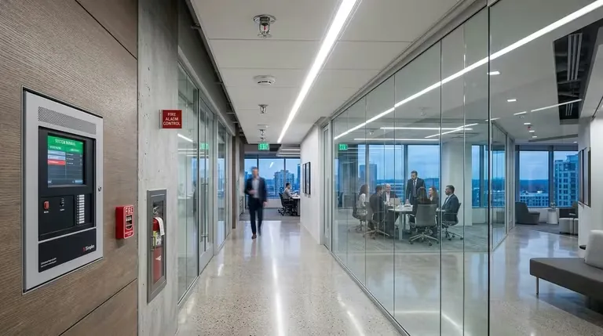
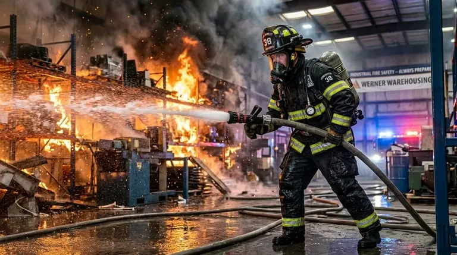

Cuando diseñas la protección contra incendios de un edificio, la detección es lo que separa una instalación que solo reacciona de una que actúa a tiempo. Los rociadores y la supresión combaten el fuego; el sistema de detección y alarma hace algo distinto: avisa. Alerta a las personas, llama a la brigada, ordena la evacuación y, cuando toca, dispara la supresión. Es el sistema nervioso del edificio, y si falla, todo lo demás llega tarde.
La norma que manda aquí es la NFPA 72 — National Fire Alarm and Signaling Code —. Cubre el diseño, la instalación, las pruebas y el mantenimiento de todo el ecosistema: detección, notificación y señalización. En Proyecto Red, integrador mexicano de sistemas PCI con base en CDMX y proyectos en todo el país, este es uno de los servicios centrales, y nunca lo entregamos suelto: la detección se coordina desde el primer plano con los rociadores y la supresión del mismo inmueble.
En esta guía vas a ver los bloques que componen el sistema, qué detector usar en cada ambiente, por qué un panel direccionable cambia el juego, cómo se calcula la notificación para que de verdad se escuche, y la integración con supresión que separa a un integrador de un simple proveedor de cajas.
1. Por qué la detección define el resultado de un incendio
Un incendio no estalla de golpe: sigue una curva. Primero hay una etapa incipiente de combustión lenta, que puede durar minutos sin una sola llama visible. Luego viene el crecimiento, después el flashover, y al final la extinción. Si proteges un edificio, toda tu ventana de oportunidad está en esos primeros minutos incipientes. Detectar ahí es la diferencia entre un susto y una pérdida total.
Por eso un sistema bien diseñado bajo NFPA 72 persigue tres cosas a la vez:
- Detección temprana: identificar el evento en su etapa incipiente, antes de que haya llama o calor significativo.
- Notificación confiable: alertar a los ocupantes de forma inequívoca, audible y visible, en cualquier punto del inmueble.
- Comando y control: disparar acciones automáticas —liberación de puertas, paro de HVAC, activación de supresión, llamada a monitoreo— sin intervención humana.
Un sistema de rociadores apaga el fuego que ya creció. Un sistema de detección bien diseñado avisa cuando el fuego apenas empieza — y esa diferencia de minutos es, casi siempre, la diferencia entre un susto y una tragedia.
2. Anatomía de un sistema de detección y alarma
Todo sistema bajo NFPA 72 se reduce a tres bloques: lo que detecta, lo que decide y lo que avisa. Dispositivos de iniciación, unidad de control y dispositivos de notificación. Cuando diseñamos cada bloque lo dimensionamos según la ocupación real del inmueble, la carga de fuego de cada zona y lo que pedirán después protección civil y tu aseguradora. No es un catálogo: es un sistema pensado para tu edificio.
- Dispositivos de iniciación: detectores automáticos (humo, calor, llama, multicriterio) y estaciones manuales de disparo.
- Unidad de control (FACP): el panel de control de alarma de incendio, que recibe señales, ejecuta la lógica de causa-efecto y comanda salidas.
- Dispositivos de notificación: sirenas, estrobos, bocinas de voz y señalización que alertan a los ocupantes.
- Circuitos de monitoreo: supervisión de flujo de rociadores, posición de válvulas, presión y estado de sistemas de supresión.
- Fuente de energía supervisada: alimentación primaria más respaldo por baterías dimensionado para 24 horas en reposo más 5 minutos en alarma (o 15 según el caso).
- Comunicación a estación central: transmisión de eventos a monitoreo remoto para despacho de brigada o cuerpo de bomberos.

3. Tipos de detector y cuándo se usa cada uno
Elegir el detector correcto es la decisión más importante de todo el diseño. Si te equivocas, pasa una de dos cosas: el sistema dispara falsas alarmas sin parar (y entonces el personal deja de creerle), o peor, no detecta el fuego cuando importa. La NFPA 72 y la NFPA 76 orientan la selección según el tipo de fuego que esperas y las condiciones de cada espacio. Esta tabla resume cuándo va cada uno.
| Tipo de detector | Principio de operación | Aplicación ideal | Limitación principal |
|---|---|---|---|
| Humo fotoeléctrico | Dispersión de luz por partículas | Fuegos latentes y de combustión lenta (oficinas, hoteles) | Menor sensibilidad a fuegos de llama rápida |
| Humo iónico | Ionización de cámara por partículas finas | Fuegos de llama rápida y combustión limpia | Propenso a falsas alarmas por vapor o polvo |
| Multicriterio | Combina humo, calor y a veces CO | Áreas mixtas que exigen baja tasa de falsa alarma | Mayor costo unitario y complejidad |
| Térmico (temperatura fija / razón de aumento) | Umbral de temperatura o gradiente | Cocinas, calderas, estacionamientos, áreas sucias | Detección tardía respecto al humo |
| De llama (UV/IR) | Radiación de la flama | Hangares, terminales de combustible, procesos con solvente | Requiere línea de vista a la flama |
| Aspiración (VESDA) | Muestreo activo de aire por tubería | Centros de datos, archivos, museos, alturas grandes | Diseño de red de muestreo especializado |
| Lineal por haz (beam) | Obscurecimiento de haz proyectado | Naves industriales y techos altos de gran área | Sensible a desalineación estructural |
4. Paneles de control: convencional vs. direccionable
El panel (FACP, Fire Alarm Control Panel) es el cerebro. Hay dos arquitecturas, y la que elijas define qué tan rápido localizas el incendio, cuánto puedes diagnosticar a distancia y, a largo plazo, cuánto te cuesta operar el sistema.
| Característica | Convencional | Direccionable / analógico |
|---|---|---|
| Localización del evento | Por zona (grupo de dispositivos) | Por dispositivo individual (dirección única) |
| Capacidad de puntos | Decenas, por circuitos de zona | Cientos a miles, por lazos SLC |
| Diagnóstico de sensibilidad | No disponible | Monitoreo de deriva y autocompensación por suciedad |
| Lógica causa-efecto | Básica, cableada | Programable por software (matrices) |
| Aplicación recomendada | Inmuebles pequeños y sencillos | Edificios medianos y grandes, multipiso, críticos |
En casi todo lo que es comercial, industrial, hospitalario o de datos, especificamos paneles direccionables analógicos. Aquí cada detector no dice solo "alarma sí o no": reporta su nivel de obscurecimiento, qué tan sucio está y su dirección exacta. Con eso ubicas el punto del incendio en segundos en vez de recorrer una zona entera, sabes qué detector va a fallar antes de que falle y bajas las falsas alarmas con umbrales que se ajustan solos. Para un edificio multipiso o un site crítico, no es un lujo: es la única forma sensata de operarlo.
5. Estaciones manuales de disparo
Las estaciones manuales (pull stations) existen para un caso muy concreto: alguien ve el fuego antes que cualquier detector y necesita dar la alarma ya. Por eso la NFPA 72 es estricta con dónde van y cómo se montan. Estos son los criterios que aplican:
- Ubicación en rutas de salida: en cada nivel, junto a cada salida y escalera de evacuación.
- Distancia de recorrido: ningún punto del piso debe quedar a más de aproximadamente 60 m (200 ft) de una estación manual.
- Altura de montaje: entre 1.07 m y 1.22 m del nivel de piso terminado, accesible para personas con discapacidad.
- Acción doble: mecanismo de doble acción (levantar/empujar) para reducir activaciones accidentales o maliciosas.
- Señalización e iluminación: visibles, contrastantes y, cuando aplica, iluminadas para identificación inmediata.
6. Dispositivos de notificación: audible y visible
De nada te sirve detectar el fuego en cinco segundos si la alarma no llega clara a cada persona del edificio. La NFPA 72 regula tanto el nivel de sonido como la cobertura visual, y los números no son negociables.
6.1 Notificación audible
El patrón estándar de evacuación es el Temporal-Three (T-3): tres pulsos, pausa, y se repite. Lo importante es que la gente lo distinga de cualquier otro ruido. Por eso la alarma debe superar el ruido ambiente en al menos 15 dBA, o quedar 5 dBA por encima de cualquier sonido máximo que dure 60 segundos. En ocupaciones de dormitorio, el mínimo típico es 75 dBA medidos en la almohada — porque la alarma tiene que despertarte.
6.2 Notificación visible
En áreas ruidosas, espacios públicos y por accesibilidad, los estrobos son obligatorios: alguien con audífonos puestos en una nave o una persona sorda tiene que ver la alarma. Su intensidad en candelas y su ubicación no se ponen "a ojo": se calculan según el área del cuarto y la altura de montaje, con las tablas de la NFPA 72 y los lineamientos de accesibilidad aplicables.
6.3 Notificación por voz (EVAC)
En edificios altos, hospitales, centros comerciales y aeropuertos la sirena no alcanza: una evacuación masiva con una sola campana se convierte en estampida. Ahí entran los sistemas de voz (EVAC / mass notification), con mensajes pregrabados y en vivo que guían una salida por fases, zona por zona. Bajan el pánico y permiten dar instrucciones distintas a cada piso según dónde esté el fuego.
7. Lógica causa-efecto y secuencia de operación
Aquí está el verdadero valor de un panel direccionable: la matriz causa-efecto. Es la programación que decide qué hace el sistema ante cada evento — qué notifica, qué para, qué dispara. Sin ella, tienes detectores caros que solo encienden una sirena. Documentamos esta matriz dentro del expediente del proyecto para que cualquiera pueda verificarla y mantenerla. Así se ve una secuencia real:
EVENTO: 2 detectores o estación manual → Alarma general de evacuación (T-3) → Paro de manejadoras de aire (HVAC) → Liberación de puertas magnéticas → Retorno de elevadores a planta baja → Notificación a estación central / bomberos
Esta lógica se prueba dispositivo por dispositivo en la puesta en marcha, y se vuelve a verificar en cada inspección anual conforme a NFPA 72. Lo que no se prueba, no funciona el día que importa.
8. Integración con rociadores y supresión
Un sistema de detección serio no trabaja solo: es el director de orquesta de todos los sistemas activos del edificio. Y es justo aquí, en la integración con rociadores y supresión, donde se nota la diferencia entre un integrador y tres contratistas que instalaron piezas sueltas que nunca se hablan entre sí.
- Supervisión de flujo: los interruptores de flujo de los rociadores reportan al panel la activación de agua, generando alarma y registro.
- Monitoreo de válvulas: toda válvula de control supervisada envía señal de "problema" si se mueve hacia cerrada — evitando el fallo más común en sistemas PCI.
- Sistemas de preacción: la apertura de la válvula de preacción requiere confirmación cruzada de dos detectores antes de liberar agua a la red.
- Disparo de agente limpio: la detección cruzada en cuartos críticos comanda la descarga de agente limpio con conteo regresivo y aborto manual.
- Paro de procesos: el panel comanda el paro de HVAC, dampers de humo y equipos de proceso para contener la propagación.
Para profundizar en los sistemas de supresión que se integran con esta detección, consulta nuestra guía dedicada a supresión por agentes limpios y CO₂ para centros de datos.
¿Necesitas un sistema de detección direccionable diseñado e instalado bajo NFPA 72, integrado con tus rociadores y supresión? Conoce el trabajo de Proyecto Red como integrador PCI.
Ver caso Proyecto Red →9. Energía, supervisión y respaldo
Piénsalo: un incendio eléctrico suele empezar tumbando la energía de la zona. Si tu panel se apaga con el corte, queda inservible justo en el momento para el que existe. Por eso la NFPA 72 exige doble fuente de energía supervisada — no es opcional.
- Fuente primaria: alimentación eléctrica comercial dedicada, con protección de circuito identificada.
- Fuente secundaria: banco de baterías sellado dimensionado para mantener el sistema en reposo 24 horas más el tiempo de alarma requerido.
- Supervisión de líneas: todos los circuitos (iniciación, notificación, comunicación) son supervisados — cualquier corte o cortocircuito genera señal de "problema".
- Cableado resistente al fuego: en circuitos críticos de supervivencia (sistemas de voz, rutas de evacuación) se usa cableado con clasificación de resistencia al fuego.
10. Pruebas, puesta en marcha y mantenimiento NFPA 72
Instalar el sistema es apenas el primer día. Un sistema de alarma se degrada solo: los detectores se ensucian, las baterías envejecen, alguien remodela y mueve una sirena. La NFPA 72 define un régimen de inspección y prueba para que el sistema siga vivo durante toda su vida útil, no solo el día que lo entregaron.
Prueba de aceptación
Verificación funcional dispositivo por dispositivo: cada detector se prueba con humo o calor real/sintético, cada estación manual se activa, cada estrobo y sirena se verifica. Se valida la matriz causa-efecto completa.
Inspección y prueba periódica
Prueba semestral de detectores y dispositivos de iniciación, prueba anual del 100% del sistema, verificación trimestral de la transmisión a monitoreo y prueba mensual de baterías según el componente.
Sensibilidad de detectores
Verificación de la sensibilidad de los detectores de humo a intervalos definidos. Los paneles direccionables permiten lectura electrónica continua; los convencionales requieren prueba con instrumento.
Registro y expediente
Cada prueba se documenta en el formato NFPA 72 correspondiente, firmado por el técnico. Estos registros conforman el expediente que se presenta en auditorías de protección civil y aseguradoras.
11. Errores comunes en sistemas de detección en México
En obra y en mantenimiento, en proyectos de CDMX y del interior, hay errores que se repiten una y otra vez. Casi ninguno es de equipo: son de diseño y de instalación. Estos son los que más comprometen un sistema:
| Error | Consecuencia | Solución |
|---|---|---|
| Detector inadecuado para el ambiente | Falsas alarmas que llevan a desconectar el panel | Selección por zona según ambiente real |
| Detectores cerca de difusores de HVAC | Detección tardía por dilución del humo | Reubicación según patrones de flujo de aire |
| Sin respaldo de baterías dimensionado | Sistema inoperable durante corte de energía | Cálculo de carga y banco de baterías supervisado |
| Notificación insuficiente en zonas ruidosas | Ocupantes no escuchan la alarma de evacuación | Cálculo de nivel sonoro + estrobos |
| Sin matriz causa-efecto documentada | Imposible verificar o mantener la lógica | Matriz programada y documentada en el expediente |
| Detección no integrada con supresión | Supresión que dispara tarde o no dispara | Integración con detección cruzada y monitoreo |
Preguntas frecuentes
¿Qué norma rige los sistemas de detección y alarma de incendio en México?
La referencia técnica es la NFPA 72 (National Fire Alarm and Signaling Code), que define diseño, instalación, prueba y mantenimiento de la detección, la notificación y la señalización. En México se aplica junto con la NOM-002-STPS para condiciones de seguridad contra incendio en centros de trabajo. Proyecto Red diseña e instala bajo ambos marcos desde CDMX y a nivel nacional.
¿Cuál es la diferencia entre un panel convencional y uno direccionable?
Un panel convencional te dice en qué zona —un grupo de dispositivos— está el evento. Un direccionable analógico te dice exactamente cuál dispositivo reporta, y además lee su obscurecimiento y su nivel de suciedad. Eso ubica el fuego en segundos, baja las falsas alarmas y te avisa qué detector mantener antes de que falle.
¿Qué detector debo usar en un centro de datos o cuarto eléctrico?
Para un site o un CPD lo normal es detección por aspiración (VESDA): muestrea el aire en continuo y huele el incendio mucho antes de que haya humo visible. En cuartos eléctricos y telecom suele combinarse con detectores de humo de alta sensibilidad. El detector se elige por el ambiente real de cada zona, nunca por costo unitario.
¿Cada cuánto se debe probar un sistema de alarma bajo NFPA 72?
La NFPA 72 marca una prueba de aceptación al instalar y luego un régimen periódico: detectores e iniciadores semestral, el 100% del sistema anual, la transmisión a monitoreo trimestral y las baterías mensual. Cada prueba se firma en el formato NFPA 72, que es el expediente que pedirán protección civil y tu aseguradora.
¿Por qué mi panel marca falsas alarmas constantes?
Casi siempre es un detector mal elegido o mal ubicado: un iónico junto a una cocina, un detector bajo un difusor de HVAC, o sensibilidad sin calibrar. El peligro real es que alguien silencie o desconecte el panel y deje el edificio sin protección. La salida es reubicar y reseleccionar por zona, y usar paneles direccionables con umbral dinámico.
12. ¿Por qué elegir a Proyecto Red?
Proyecto Red es un integrador de sistemas PCI, no un proveedor de cajas. La diferencia se nota en lo que recibes: no una pila de dispositivos para que alguien más arme, sino un sistema diseñado, calculado, instalado, programado, probado y documentado — y coordinado con los rociadores y la supresión del mismo edificio desde el primer plano. Trabajamos desde la Ciudad de México con proyectos en todo el país.
- Ingeniería de detalle: diseño del sistema con cálculo de cobertura, niveles de notificación y matriz causa-efecto.
- Paneles direccionables: arquitectura analógica con localización por dispositivo y diagnóstico de sensibilidad.
- Integración total: coordinación con rociadores, supresión por agente limpio, HVAC, elevadores y control de accesos.
- Equipo con listado UL/FM: componentes certificados con documentación de origen.
- Programa NFPA 72: contratos de inspección, prueba y mantenimiento que mantienen el sistema en cumplimiento.
- Expediente completo: planos as-built, matriz causa-efecto, protocolos de prueba y manuales de operación.